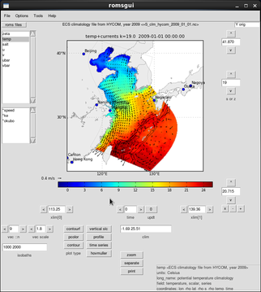
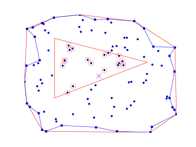
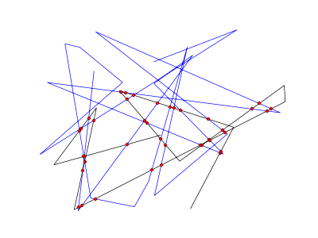
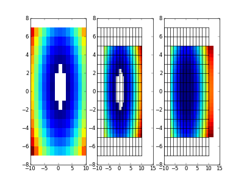
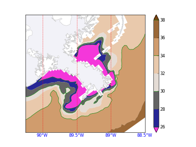

1. roms module
The roms module includes the classes Grid and His that can be used for slices (iso,
depth, any path ...), s to z levels conversion, time series, etc.
A few examples follow:


InteractiveLine is created with right mouse clicks, stopping with a left click. Points can be added, removed and moved, after pressing "e" (edit; press "e" again to stop edition mode). The line can be converted between spline and broken line.~


A few examples follow:
1.1
A fast way to plot model domain
from okean import roms
grd='ocean_grd.nc'
roms.Grid(grd).plot(title='',xlim=[-95,-87.5])
1.2
slicek: horizontal slice at s-level
from okean import roms, pl_tools
import pylab as pl
def proj(xlim,ylim):
from mpl_toolkits.basemap import Basemap
return Basemap(projection='merc',
resolution='h',
llcrnrlat=ylim[0],
llcrnrlon=xlim[0],
urcrnrlat=ylim[1],
urcrnrlon=xlim[1],
lat_ts=0.0)
def draw_map(m,ax):
m.fillcontinents(color='#f2f2f8',ax=ax)
m.drawcountries(color='#cccccc',ax=ax)
m.drawstates(color='#cccccc',ax=ax)
m.drawcoastlines(color='#cccccc',ax=ax)
his='ocean_his.nc'
grd='ocean_grd.nc'
r=roms.His(his,grd)
m=proj([r.grid.lon.min(),r.grid.lon.max()],
[r.grid.lat.min(),r.grid.lat.max()])
x,y,z,v=r.slicek('salt',-1,0)
x,y=m(x,y)
pl.figure(figsize=(8,4.85))
ax=pl.axes()
p=ax.pcolormesh(x,y,v,cmap=pl_tools.cm.mod_jet)
pl.colorbar(p,orientation='horizontal',pad=0.075)
draw_map(m,ax)
1.3
slicez: horizontal slice at z const
x,y,z,v=r.slicez('salt',-50,0)
x,y=m(x,y)
pl.figure(figsize=(8,4.85))
ax=pl.axes()
p=ax.contourf(x,y,v)
pl.colorbar(p,orientation='horizontal',pad=0.075)
draw_map(m,ax)
1.4
sliceuv: horizontal slices for currents
x,y,z,u,v=r.sliceuv('surface',0)
x,y=m(x,y)
pl.figure(figsize=(8,4.85))
ax=pl.axes()
M=np.zeros(x.shape,'bool')
M[::3,::3]=True
p=pl.quiver(x[M],y[M],u[M],v[M],scale=20,width=.001,color='b')
pl.quiverkey(p,.85,.07,0.5,'0.5 m s$^{-1}$')
draw_map(m,ax)
1.5
slicei(j): slices at cons xi(eta)
x,y,z,v=r.slicei('salt',50,0,dist=0)
pl.figure()
ax=pl.axes()
p=ax.contourf(y,z,v)
pl.colorbar(p)
pl.axis([28,29.5,-200,1])
1.6
slice along any predefined path
m=r.grid.plot(title='',xlim=[-95,-87.5],bathy=False)
x=np.linspace(-92.,-88,50)
y=np.linspace(28.,30,50)
xx,yy=m(x,y)
pl.plot(xx,yy,'r')
dist,z,v=r.slicell('salt',x,y,0,dist=True)
from mpl_toolkits.basemap import cm
pl.figure()
pl.pcolormesh(dist/1000.,z,v,vmin=30,vmax=37.5,cmap=cm.GMT_no_green)
pl.colorbar()
1.7
slice along any path, created by clicking on the map:
m=r.grid.plot(title='',xlim=[-95,-87.5],bathy=False)
i=pl_tools.InteractiveLine()
x,y=m(i.xx,i.yy,True)
InteractiveLine is created with right mouse clicks, stopping with a left click. Points can be added, removed and moved, after pressing "e" (edit; press "e" again to stop edition mode). The line can be converted between spline and broken line.~
dist,z,v=r.slicell('salt',x,y,0,dist=True)
pl.figure()
pl.pcolormesh(dist/1000.,z,v,vmin=30,vmax=37.5)
pl.colorbar()
1.8
depth of ... (depth where salinity is 30)
v=r.use('salt',ocean_time=200)
z=r.s_levels(time=200)
d=roms.roms_tools.depthof(v,z,30)
x,y=m(r.grid.lon,r.grid.lat)
pl.figure(figsize=(8,4.85))
ax=pl.axes()
p=ax.pcolormesh(x,y,d,cmap=pl.cm.BuPu_r)
pl.colorbar(p,orientation='horizontal',pad=0.075)
draw_map(m,ax)
1.9
time series
t,z,v=r.time_series('salt',-91.5,29.25,depth=-5)
pl.figure(figsize=(8,4.85))
ax=pl.axes()
ax.plot(r.datetime,v)
import matplotlib.dates as mdates
months = mdates.MonthLocator()
fmt=mdates.DateFormatter('%b')
ax.xaxis.set_major_locator(months)
ax.xaxis.set_major_formatter(fmt)
1.10
s to z levels
z_r=r.s_levels(time=100,ruvpw='r',i=50,j=20)
z_w=r.s_levels(time=100,ruvpw='w',i=50,j=20)
pl.figure()
for z in z_w:
pl.plot([-1,1],[z,z],'b')
pl.plot(0*z_r,z_r,'ro')
pl.xlim(-5,5)
pl.ylim(z_w.min()-3,z_w.max()+3)
pl.text(0,z_w.min()-2,'bottom, h',ha='center')
pl.text(0,z_w.max()+.5,'zeta',ha='center')
pl.gca().set_xticks([])
2.roms gui
OKEAN includes a graphical interface fro roms input/output visualization. Currently
it supports files based on grid dimensions, like his, clim, avg, ... Floats, etc, are not supported.
It started as a very simple gui to make use of the roms module slice utilities, but then it become
more and more complex. It is still under development but works very well. The interface is based
of the roms-agrif matlab gui
(image here).
The gui can be called from command line as rgui. Here is a snapshot (clik on the image for a larger version):

3. calcs
Examples of calculations needed in many occasions ...
the prints for centroid and area of the concave and convex hull are:
The calculation is done in fortran, so it can deal with long vectors very fast.~~
Method based on matplotlib delaunay interpolation, but with some more~ options and possibilities.
Algorithm to find nice data bounds, xticks, contour values, etc.
3.1
concave/convex hull; polygon area and centroid; points in polygon
from okean import calc, hull
import numpy as np
import pylab as pl
np.random.seed(0)
x=np.random.rand(100)
y=np.random.rand(100)
pl.figure()
pl.plot(x,y,'bo')
# concave/convex hull:
i=hull.convex_hull(x,y)
pl.plot(x[i],y[i],'r-x')
j=hull.concave_hull(x,y)
pl.plot(x[j],y[j],'b-s')
pl.gca().set_frame_on(0)
pl.gca().set_xticks([])
pl.gca().set_yticks([])
# centroid and area:
x0,y0=calc.poly_centroid(x[i],y[i])
pl.plot(x0,y0,'r+',ms=16)
print x0,y0,calc.poly_area(x[i],y[i])
x0,y0=calc.poly_centroid(x[j],y[j])
pl.plot(x0,y0,'bx',ms=16)
print x0,y0,calc.poly_area(x[j],y[j])
# in polygon:
xp=0.2,0.8,0.2
yp=0.3,0.6,0.8
i=calc.inpolygon(x,y,xp,yp)
pl.plot(xp+(xp[0],),yp+(yp[0],),'r')
pl.plot(x[i],y[i],'o',ms=15,mfc='none',mec='r')

the prints for centroid and area of the concave and convex hull are:
0.486401572362 0.485562699566 -0.859717808346 0.48700508327 0.486515331553 -0.788421520679The last value in each line is the signed area (sign indicates the direction)
3.2
lines intersectionThe calculation is done in fortran, so it can deal with long vectors very fast.~~
np.random.seed(3)
x1=np.random.rand(10)
y1=np.random.rand(10)
pl.figure()
pl.plot(x,y,'b')
pl.plot(x1,y1,'k')
xi,yi=calc.meetpoint(x,y,x1,y1)
pl.plot(xi,yi,'ro')
pl.gca().set_frame_on(0)
pl.gca().set_xticks([])
pl.gca().set_yticks([])

3.3
2d interpolationMethod based on matplotlib delaunay interpolation, but with some more~ options and possibilities.
from okean import calc
import numpy as np
import pylab as pl
pl.figure()
ax=pl.subplot(131)
ax1=pl.subplot(132)
ax2=pl.subplot(133)
x=np.linspace(-10,10,15)
y=np.linspace(-7,7,15)
x,y=np.meshgrid(x,y)
v=x**2+y**2
v=np.ma.masked_where(v<5,v)
x1=np.linspace(-7,12,30)
y1=np.linspace(-5,5,25)
x1,y1=np.meshgrid(x1,y1)
v1=calc.griddata(x,y,v,x1,y1)
v1e=calc.griddata(x,y,v,x1,y1,extrap=True)
ax.pcolormesh(x,y,v)
ax1.plot(x,y,'k')
ax1.plot(x.T,y.T,'k')
ax1.pcolormesh(x1,y1,v1)
ax2.plot(x,y,'k')
ax2.plot(x.T,y.T,'k')
ax2.pcolormesh(x1,y1,v1e)

3.4
loose labelAlgorithm to find nice data bounds, xticks, contour values, etc.
#(continuation from code in point 1.2)
from okean import ticks
from mpl_toolkits.basemap import cm
# loose label example:
print ticks.loose_label(105,543)
# returns [ 100. 200. 300. 400. 500. 600.]
m=proj([-90.25,-88.5],[28.5,30])
x,y,z,v=r.slicek('salt',-1,0)
x,y=m(x,y)
pl.figure()
ax=pl.axes()
vals=ticks.loose_label(v.mean()-v.std(),v.mean()+v.std(),10)
p=ax.contourf(x,y,v,vals,cmap=cm.s3pcpn,extend='both')
c=pl.colorbar(p)
p2=ax.contour(p,levels=p.levels[::2],colors='g')
c.add_lines(p2)
draw_map(m,ax)
meridians=ticks.loose_label(m.llcrnrlon,m.urcrnrlon)
m.drawmeridians(meridians, labels=[0,0,0,1],ax=ax,color='r',fontdict={'color':'b'})

4. Geophysical data files
Tools to deal with netcdf anf grib files
4.1
NetCDF utilities
# TODO
4.2
Grib utilities
# TODO
5. TODO TODO
TODO
5.1
SOME
# TODO
5.2
SOME
# TODO
this page is under construction !!